Je Rolle eine Bildfolge bei 390 × 844 px. Aufbau wie die heutige Einführung (.auth-card auf --grad-auth). Gelb gestrichelt mit Nummer = neuer Baustein, siehe Liste unten.
Auf der Übersicht steht dein nächster Termin. Sag bis zum Meldeschluss zu oder ab. Wer zu spät antwortet, bekommt automatisch eine Strafe.
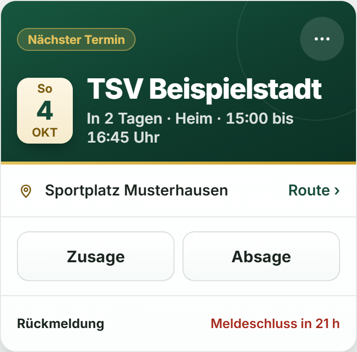
Die Einführung findest du später unter Einstellungen wieder.
Angeschlagen, verletzt oder im Urlaub? Stell es unter Mein Status ein, gern mit Datum. So weiß der Trainer, wann du wieder da bist.
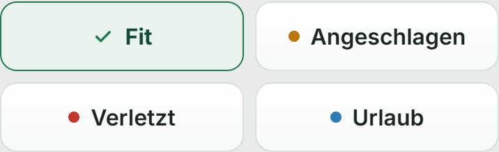
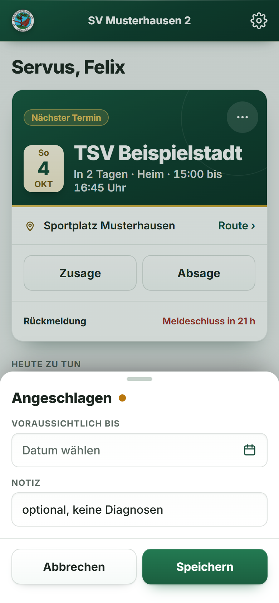
Unter Konto siehst du, was du offen hast. Bezahl direkt per PayPal oder tipp auf Zahlung melden, wenn du bar gezahlt hast. Offene Strafen werden nach Ablauf teurer.
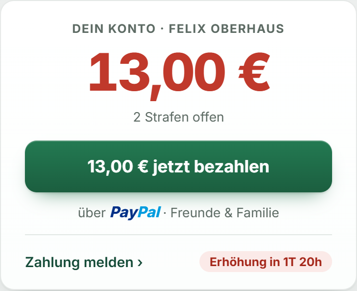
Im Katalog stehen alle Strafen der Mannschaft mit Betrag. So weißt du vorher, was was kostet.
Leg die App auf deinen Home-Bildschirm. Ohne das kommen auf dem iPhone keine Mitteilungen an.
Die App meldet sich bei dir, wenn etwas für dich ansteht:
Ruhezeiten und einzelne Arten stellst du unter Einstellungen › Mitteilungen ein.
Optional
Alle Termine automatisch in deinem Handy-Kalender.
Das Abo lässt sich nur einmalig über die Web-Oberfläche anlegen, danach erscheint der Kalender automatisch in deiner Kalender-App.
Änderungen erscheinen bei Google mit bis zu 24 Stunden Verzögerung.
Unten wechselst du zwischen den Bereichen. Oben rechts am Zahnrad findest du die Einstellungen.
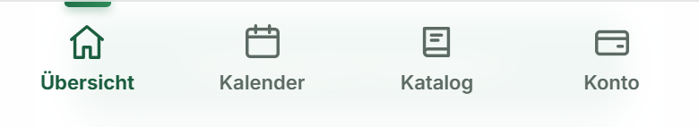
Die Einführung kannst du jederzeit unter Einstellungen wieder aufrufen.
Tipp auf der Übersicht im nächsten Termin auf Rückmeldungen. Du siehst, wer zu- oder abgesagt hat und wer noch offen ist. Push senden erinnert alle Offenen.
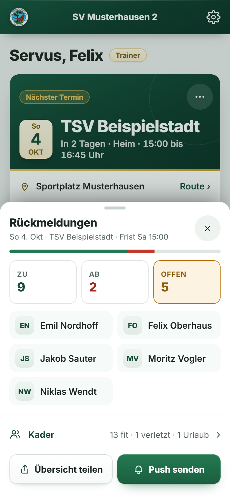
Die Einführung findest du später unter Einstellungen wieder.
Unter Trainer steht das nächste Spiel. Mit Elf aufstellen wählst du Formation, Startelf und Bank. Bewährte Aufstellungen speicherst du als Vorlage.
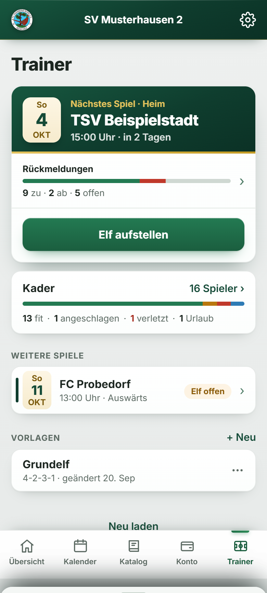
Im Kader siehst du, wer fit ist und wer ausfällt, mit Grund und Datum. Den Status eines Spielers kannst du selbst setzen.
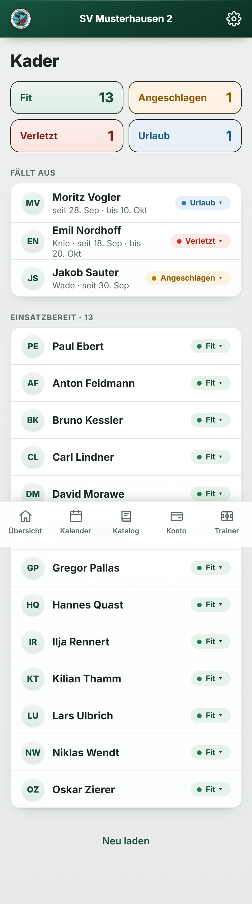
Neue Spieler kommen über deinen Einladungslink. Unter Einstellungen › Rollen gibst du sie frei. Tippst du auf ein Mitglied, änderst du seine Rolle, auch wenn der Kassenwart wechselt.
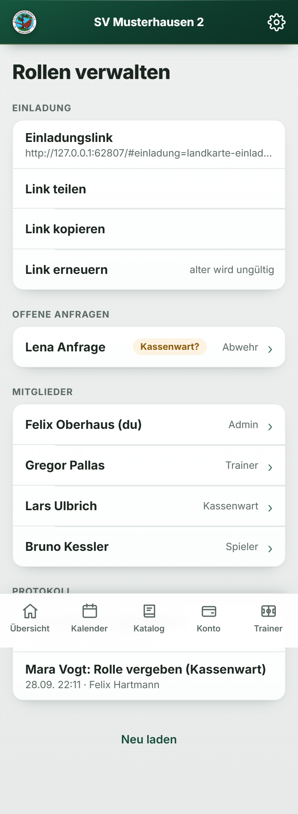
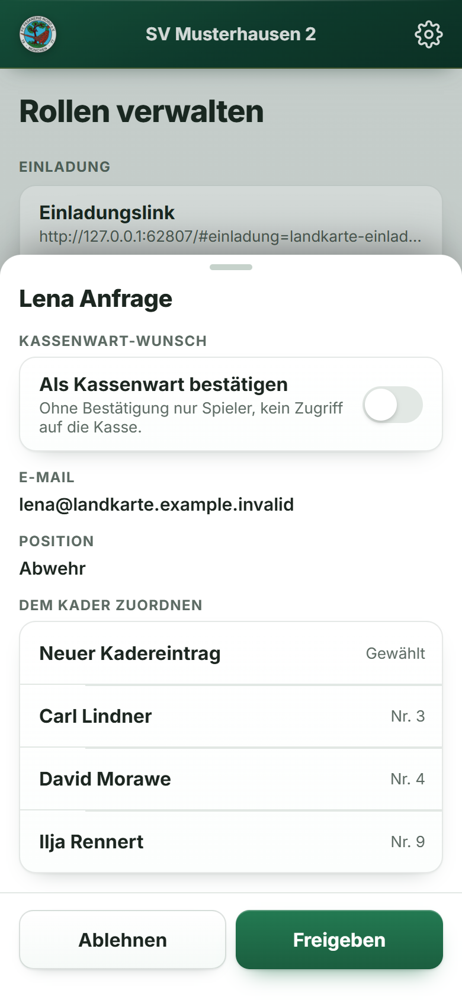
Leg die App auf deinen Home-Bildschirm. Ohne das kommen auf dem iPhone keine Mitteilungen an.
Die App meldet sich bei dir, wenn etwas für dich ansteht:
Ruhezeiten und einzelne Arten stellst du unter Einstellungen › Mitteilungen ein.
Optional
Alle Termine automatisch in deinem Handy-Kalender.
Das Abo lässt sich nur einmalig über die Web-Oberfläche anlegen, danach erscheint der Kalender automatisch in deiner Kalender-App.
Änderungen erscheinen bei Google mit bis zu 24 Stunden Verzögerung.
Unten wechselst du zwischen den Bereichen. Oben rechts am Zahnrad findest du die Einstellungen.
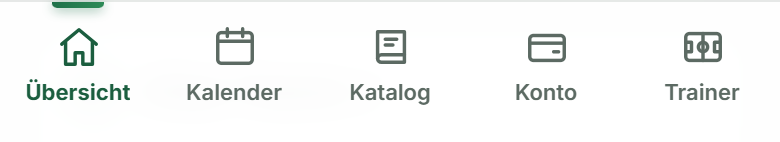
Die Einführung kannst du jederzeit unter Einstellungen wieder aufrufen.
Wie jeder Spieler sagst du auf der Übersicht zu oder ab, setzt deinen Status und siehst unter Konto deine Strafen.
Die Einführung findest du später unter Einstellungen wieder.
Auf der Übersicht siehst du, was in der Kasse ist und was noch offen ist. Tipp auf den Betrag, auf Noch offen oder auf zu prüfen, um direkt in die Kasse zu springen.
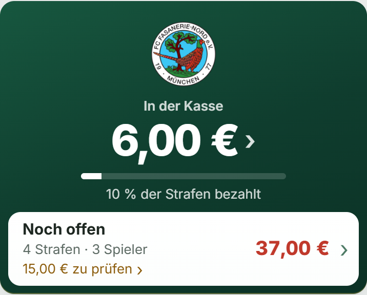
Unter Kasse tippst du auf + Strafe verhängen. Wähl Spieler und Strafen aus dem Katalog. Passt nichts, legst du über Individuell eine eigene an.
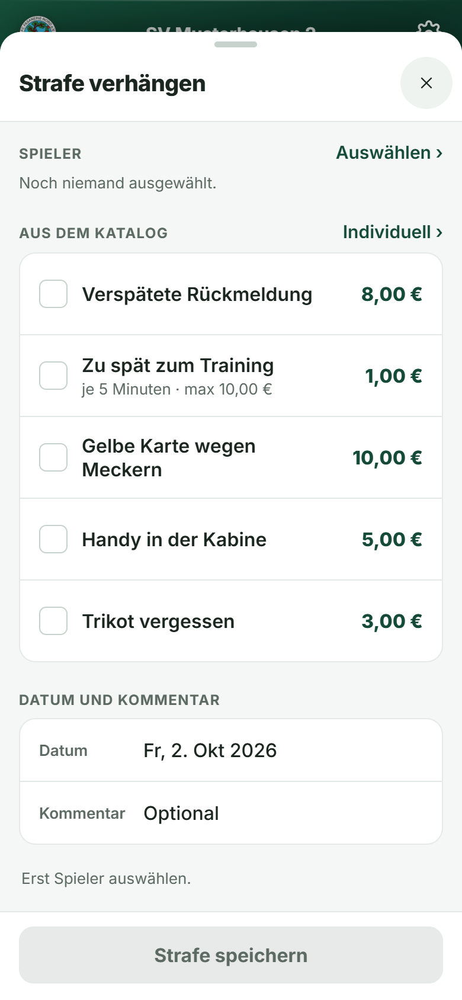
Meldet jemand eine Zahlung, landet sie unter Gemeldet. Bestätige sie, wenn das Geld da ist. Unter Offen stehen alle Schulden, unter Bezahlt alles Verbuchte.
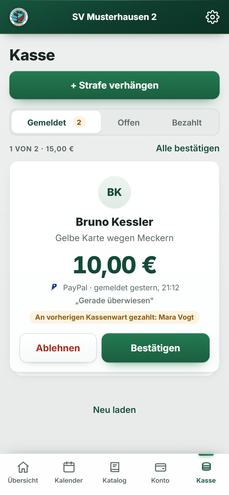
Trag den PayPal.me-Namen der Kasse ein, dann können alle direkt aus ihrem Konto bezahlen. Du findest ihn unter Einstellungen › Profil › PayPal.
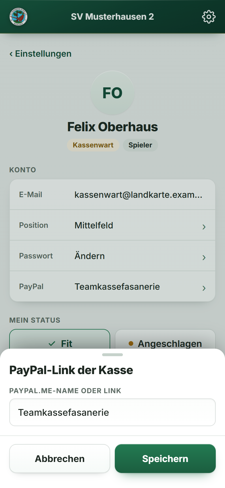
Leg die App auf deinen Home-Bildschirm. Ohne das kommen auf dem iPhone keine Mitteilungen an.
Die App meldet sich bei dir, wenn etwas für dich ansteht:
Ruhezeiten und einzelne Arten stellst du unter Einstellungen › Mitteilungen ein.
Optional
Alle Termine automatisch in deinem Handy-Kalender.
Das Abo lässt sich nur einmalig über die Web-Oberfläche anlegen, danach erscheint der Kalender automatisch in deiner Kalender-App.
Änderungen erscheinen bei Google mit bis zu 24 Stunden Verzögerung.
Unten wechselst du zwischen den Bereichen. Oben rechts am Zahnrad findest du die Einstellungen.
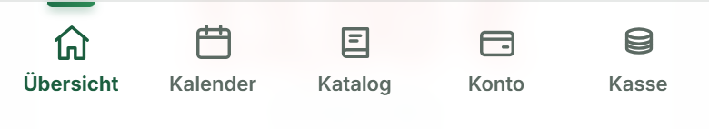
Die Einführung kannst du jederzeit unter Einstellungen wieder aufrufen.
Oben sagst du selbst zu oder ab. Darunter siehst du, wie die Mannschaft geantwortet hat, und kommst zu Aufstellung und Kader.
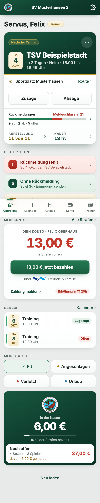
Die Einführung findest du später unter Einstellungen wieder.
Tipp im Termin auf Rückmeldungen. Du siehst, wer zu- oder abgesagt hat und wer noch offen ist. Push senden erinnert alle Offenen.
Unter Trainer steht das nächste Spiel. Mit Elf aufstellen wählst du Formation, Startelf und Bank. Bewährte Aufstellungen speicherst du als Vorlage.
Im Kader siehst du, wer ausfällt. Tipp auf einen Spieler, um seinen Status zu setzen, mit Grund und Datum.
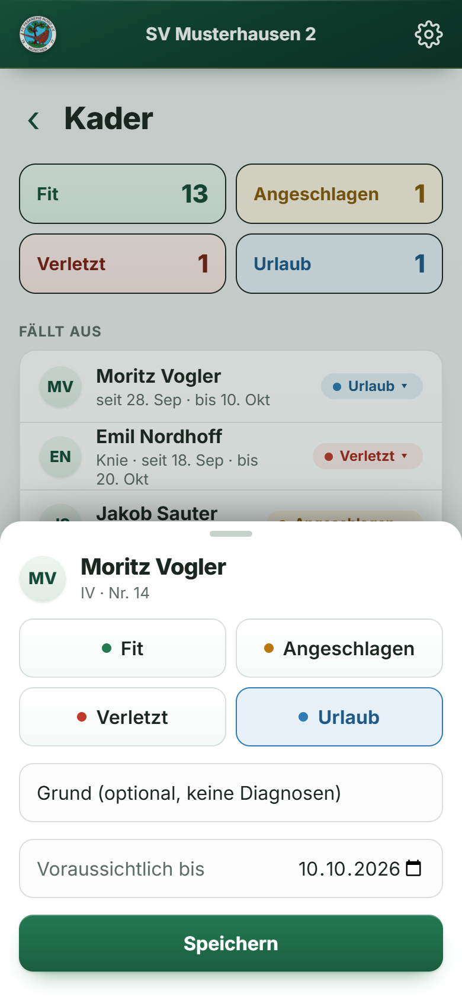
Neue Spieler kommen über deinen Einladungslink. Unter Einstellungen › Rollen gibst du sie frei. Tippst du auf ein Mitglied, änderst du seine Rolle, auch wenn der Kassenwart wechselt.
Leg die App auf deinen Home-Bildschirm. Ohne das kommen auf dem iPhone keine Mitteilungen an.
Die App meldet sich bei dir, wenn etwas für dich ansteht:
Ruhezeiten und einzelne Arten stellst du unter Einstellungen › Mitteilungen ein.
Optional
Alle Termine automatisch in deinem Handy-Kalender.
Das Abo lässt sich nur einmalig über die Web-Oberfläche anlegen, danach erscheint der Kalender automatisch in deiner Kalender-App.
Änderungen erscheinen bei Google mit bis zu 24 Stunden Verzögerung.
Unten wechselst du zwischen den Bereichen. Oben rechts am Zahnrad findest du die Einstellungen.
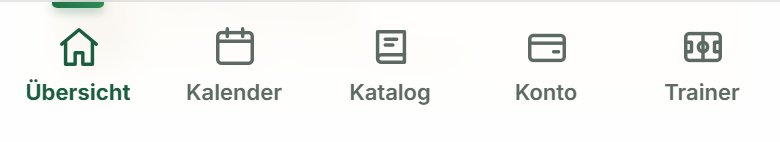
Die Einführung kannst du jederzeit unter Einstellungen wieder aufrufen.
Auf jeder Seite zusätzlich: .auth-wrap, .auth-card.ob-card, .auth-title, .ob-text, .ob-fuss, Überspringen als .link-btn.ob-spaeter und die Fortschrittspunkte (Neu 1).
| Rolle | Seite | Verwendete Bausteine | Ansicht aus der Referenz |
|---|---|---|---|
| Spieler | 01 · Termine und Zusage | .auth-crest · .auth-title · .ob-text · Terminkarte .tk mit .tk-rsvp und Meldeschluss · .btn-primary | baustein_terminkarte.png (aus spieler_uebersicht.png) |
| Spieler | 02 · Mein Status | .st-wahl[data-kompakt] .st-knopf · Blatt „Voraussichtlich bis“ | baustein_status-chips.png · spieler_mein-status.png (Ausschnitt Blatt) |
| Spieler | 03 · Strafenkonto | Kontobanner .mine-banner (.mb-pay .mb-pp .mb-foot .mb-cd) | baustein_kontobanner.png (aus spieler_konto-ich.png) |
| Spieler | 04 · Katalog | .kat-list .kat-item .kat-main .kat-name .kat-sub .kat-amount | Keine Aufnahme vorhanden: Karte Ansichten/Katalog, Einträge aus kassenwart_strafe-verhaengen.png |
| Spieler | 05 · Zum Home-Bildschirm | .auth-card .ob-text · .abo-karten .abo-karte .abo-k-t .abo-schritte · .btn-primary | Aufbau wie Kalender-Abo-Blatt (spieler_kalender-abo.png); Schritt aus neu_einfuehrung-push.png |
| Spieler | 06 · Mitteilungen erlauben | .ob-text · .ob-anl .ob-liste · .btn-primary.ob-weiter · .ob-spaeter · .ob-hinweis | neu_einfuehrung-push.png; Kategorien aus spieler_einstellungen-mitteilungen.png |
| Spieler | 07 · Termine abonnieren | .ob-schritt · .abo-karten .abo-karte .abo-k-t .abo-btn .abo-hinweis .abo-schritte .abo-fuss · .btn.ob-sek | spieler_kalender-abo.png (Blatt „Termine abonnieren“) |
| Spieler | 08 · Alles bereit | .auth-crest · .auth-title · .ob-text · Bild der unteren Navigation · .btn-primary · .ob-hinweis | baustein_bottom-nav-spieler.png |
| Trainer (spielt nicht mit) | 01 · Wer kommt? | .auth-crest · Rückmeldungen-Blatt .rs2-panel (.rs2-bar .rs2-kacheln .rs2-liste .rs2-fuss .rs2-btn) | spielertrainer_rueckmeldungen.png (Ersatz, fehlt beim Trainer) |
| Trainer (spielt nicht mit) | 02 · Elf aufstellen | .tv-next (.tv-next-kopf .tv-next-btn) · .group-head · .tv-tpls .tv-tpl | trainer_trainer-spiel-waehlen.png (zwei Ausschnitte) |
| Trainer (spielt nicht mit) | 03 · Kader und Status | .kad-kpis .kpi · .group-head · .kad-list .kad-row .kad-pille | trainer_kader.png |
| Trainer (spielt nicht mit) | 04 · Freigeben und Rollen | .group-head · .ein-gruppe .ein-zeile · .mark · Freigabe-Blatt .nsb mit .ein-schalter .sw | trainer_einladung-anfragen.png · trainer_anfrage-freigeben.png |
| Trainer (spielt nicht mit) | 05 · Zum Home-Bildschirm | .auth-card .ob-text · .abo-karten .abo-karte .abo-k-t .abo-schritte · .btn-primary | Aufbau wie Kalender-Abo-Blatt (trainer_kalender-abo.png); Schritt aus neu_einfuehrung-push.png |
| Trainer (spielt nicht mit) | 06 · Mitteilungen erlauben | .ob-text · .ob-anl .ob-liste · .btn-primary.ob-weiter · .ob-spaeter · .ob-hinweis | neu_einfuehrung-push.png; Kategorien aus spielertrainer_einstellungen-mitteilungen.png |
| Trainer (spielt nicht mit) | 07 · Termine abonnieren | .ob-schritt · .abo-karten .abo-karte .abo-k-t .abo-btn .abo-hinweis .abo-schritte .abo-fuss · .btn.ob-sek | trainer_kalender-abo.png (Blatt „Termine abonnieren“) |
| Trainer (spielt nicht mit) | 08 · Alles bereit | .auth-crest · .auth-title · .ob-text · Bild der unteren Navigation · .btn-primary · .ob-hinweis | baustein_bottom-nav-trainer.png |
| Kassenwart | 01 · Erst mal als Spieler | .auth-crest · Terminkarte .tk mit .tk-rsvp | baustein_terminkarte.png (gleich in kassenwart_uebersicht.png) |
| Kassenwart | 02 · Die Kasse | Kassenbanner .kb (.kb-value .kb-chev .kb-bar .kb-offen .kb-offen-gem) | baustein_kassenbanner-kassenwart.png |
| Kassenwart | 03 · Strafe verhängen | .ks-seite (.ks-seite-kopf .ks-seite-x) · .group-head · .ks-katzeile | kassenwart_strafe-verhaengen.png |
| Kassenwart | 04 · Prüfen und verbuchen | .ks-seg .ks-seg-b .ks-seg-n · .ks-stapelkopf · Prüfkarte .ks-card (.ks-av .ks-amt .ks-meta .ks-zitat .ks-vorher .ks-actions) | kassenwart_kasse-pruefen.png |
| Kassenwart | 05 · PayPal-Link hinterlegen | Blatt mit .group-head · Eingabefeld · .btn / .btn-primary | kassenwart_einstellungen-paypal.png |
| Kassenwart | 06 · Zum Home-Bildschirm | .auth-card .ob-text · .abo-karten .abo-karte .abo-k-t .abo-schritte · .btn-primary | Aufbau wie Kalender-Abo-Blatt (kassenwart_kalender-abo.png); Schritt aus neu_einfuehrung-push.png |
| Kassenwart | 07 · Mitteilungen erlauben | .ob-text · .ob-anl .ob-liste · .btn-primary.ob-weiter · .ob-spaeter · .ob-hinweis | neu_einfuehrung-push.png; Kategorien aus kassenwart_einstellungen-mitteilungen.png |
| Kassenwart | 08 · Termine abonnieren | .ob-schritt · .abo-karten .abo-karte .abo-k-t .abo-btn .abo-hinweis .abo-schritte .abo-fuss · .btn.ob-sek | kassenwart_kalender-abo.png (Blatt „Termine abonnieren“) |
| Kassenwart | 09 · Alles bereit | .auth-crest · .auth-title · .ob-text · Bild der unteren Navigation · .btn-primary · .ob-hinweis | baustein_bottom-nav-kassenwart.png |
| Spielertrainer | 01 · Dein nächster Termin | .auth-crest · Terminkarte .tk mit .tk-rsvp, Rückmeldebalken und .tk-felder | spielertrainer_uebersicht.png (Ausschnitt Hero) |
| Spielertrainer | 02 · Wer kommt? | Rückmeldungen-Blatt .rs2-panel (.rs2-bar .rs2-kacheln .rs2-liste .rs2-fuss .rs2-btn) | spielertrainer_rueckmeldungen.png |
| Spielertrainer | 03 · Elf aufstellen | .tv-next (.tv-next-kopf .tv-next-btn) · .group-head · .tv-tpls .tv-tpl | spielertrainer_trainer-spiel-waehlen.png (zwei Ausschnitte) |
| Spielertrainer | 04 · Kader und Status | Status-Blatt .sb-panel .sb-k · Eingabefelder · .btn-primary | spielertrainer_kader-status.png (Ausschnitt Blatt) |
| Spielertrainer | 05 · Freigeben und Rollen | .group-head · .ein-gruppe .ein-zeile · .mark · Freigabe-Blatt .nsb mit .ein-schalter .sw | spielertrainer_einladung-anfragen.png · spielertrainer_anfrage-freigeben.png |
| Spielertrainer | 06 · Zum Home-Bildschirm | .auth-card .ob-text · .abo-karten .abo-karte .abo-k-t .abo-schritte · .btn-primary | Aufbau wie Kalender-Abo-Blatt (spielertrainer_kalender-abo.png); Schritt aus neu_einfuehrung-push.png |
| Spielertrainer | 07 · Mitteilungen erlauben | .ob-text · .ob-anl .ob-liste · .btn-primary.ob-weiter · .ob-spaeter · .ob-hinweis | neu_einfuehrung-push.png; Kategorien aus spielertrainer_einstellungen-mitteilungen.png |
| Spielertrainer | 08 · Termine abonnieren | .ob-schritt · .abo-karten .abo-karte .abo-k-t .abo-btn .abo-hinweis .abo-schritte .abo-fuss · .btn.ob-sek | spielertrainer_kalender-abo.png (Blatt „Termine abonnieren“) |
| Spielertrainer | 09 · Alles bereit | .auth-crest · .auth-title · .ob-text · Bild der unteren Navigation · .btn-primary · .ob-hinweis | baustein_bottom-nav-spielertrainer.png |